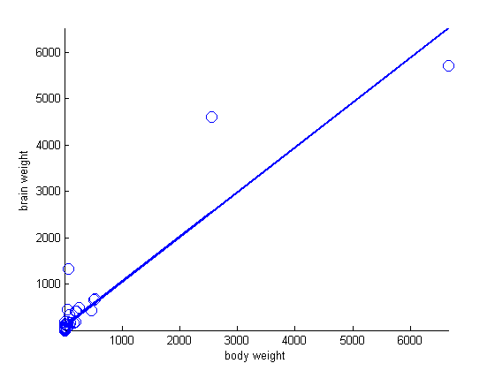
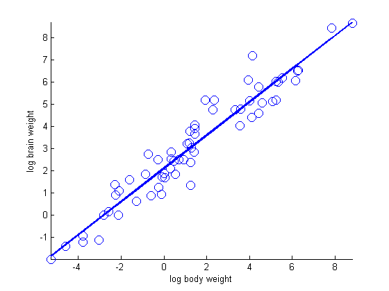

Illustrate log transform for linear regression
We plot brain weight vs Body weight for different mammals Data is from http://seattlecentral.edu/qelp/sets/017/017.html
Contents
% This file is from pmtk3.googlecode.com loadData('bodyBrainWeight'); % x = body weight in kg % y = brain weight in g
Original values
m = linregFit(x, y); yhat = linregPredict(m, x); figure; hold on plot(x, y, 'o', 'markersize', 10); plot(x, yhat, '-', 'linewidth', 2); xlabel('body weight') ylabel('brain weight') axis tight printPmtkFigure('linregLogTransformRaw')
Log transform
x = log(x); y = log(y); m = linregFit(x, y); yhat = linregPredict(m, x); figure; hold on plot(x, y, 'o', 'markersize', 10); plot(x, yhat, '-', 'linewidth', 2); xlabel('log body weight') ylabel('log brain weight') axis tight printPmtkFigure('linregLogTransformLog')